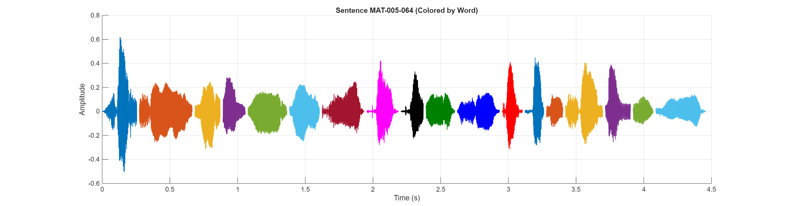

Sentence Audio:
Waveform:
| # | ID | Hanji | POJ |
|---|---|---|---|
| 1 | MAT-005-064-0003 | 設 | siat |
| 2 | MAT-005-064-0004 | 使 | sú |
| 3 | MAT-005-064-0005 | 恁 | lín |
| 4 | MAT-005-064-0006 | 的 | ê |
| 5 | MAT-005-064-0007 | 義 | gī |
| 6 | MAT-005-064-0008 | 無 | bô |
| 7 | MAT-005-064-0009 | 贏 | iâⁿ |
| 8 | MAT-005-064-0010 | 過 | kè |
| 9 | MAT-005-064-0011 | 經 | keng |
| 10 | MAT-005-064-0012 | 學 | ha̍k |
| 11 | MAT-005-064-0013 | 士 | sū |
| 12 | MAT-005-064-0014 | 及 | kap |
| 13 | MAT-005-064-0015 | 法 | Hoat |
| 14 | MAT-005-064-0016 | 利 | lī |
| 15 | MAT-005-064-0017 | 賽 | sài |
| 16 | MAT-005-064-0018 | 人 | lâng |
| 17 | MAT-005-064-0019 | 的 | ê |
| 18 | MAT-005-064-0020 | 義 | gī |